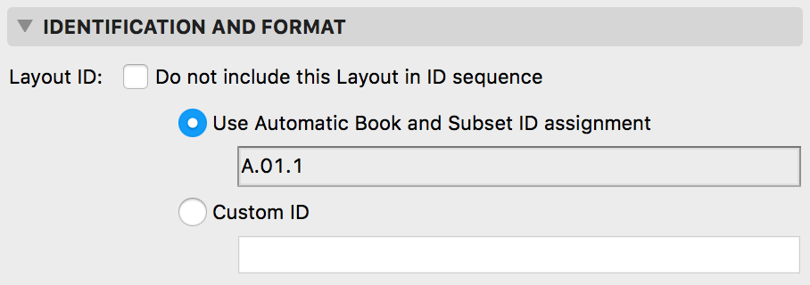

API_LayoutInfo
Properties of an Archicad Layout.
typedef struct {
GS::uchar_t layoutName[API_UniLongNameLen];
double sizeX;
double sizeY;
double leftMargin;
double topMargin;
double rightMargin;
double bottomMargin;
char customLayoutNumber[256];
bool customLayoutNumbering;
bool doNotIncludeInNumbering;
bool showMasterBelow;
bool filler_1[5];
UInt32 layoutPageNumber;
UInt32 actPageIndex;
double filler_2[2];
GS::HashTable<API_Guid, GS::UniString>* customData;
GS::uchar_t currentRevisionId[API_UniLongNameLen];
GS::uchar_t currentFinalRevisionId[API_UniLongNameLen];
bool hasIssuedRevision;
bool hasActualRevision;
bool filler_3[6];
} API_LayoutInfo;
Members
- layoutName
- The name of the layout.
From API 26 it contains unicode characters.
- sizeX
- Horizontal size of the layout in mm.
- sizeY
- Vertical size of the layout in mm.
- leftMargin
- Layout margin to the left side of the paper.
- topMargin
- Layout margin to the top side of the paper.
- rightMargin
- Layout margin to the right side of the paper.
- bottomMargin
- Layout margin to the bottom side of the paper.
- customLayoutNumber

- Corresponds to the Custom ID field on the Layout ID assignment tab page in the Layout Settings dialog (see picture below).
- customLayoutNumbering
- Corresponds to the Use Automatic Book and Subset ID numbering/Custom ID radio buttons on the Layout ID assignment tab page in the Layout Settings dialog (see picture below).
- doNotIncludeInNumbering
- Corresponds to state of the Do not include this Layout in ID sequence check box on the Layout ID assignment tab page in the Layout Settings dialog (see picture below).
- showMasterBelow

- Display master layout above or below the layout.
- layoutPageNumber

- Number of layout (page) when this layout contains any MultiPage Drawing. (Drawing with "Split to more layouts" flag.)
- actPageIndex
- The actual index of layout (page) inside the Multi Page Layout. (Layout what contains any drawing with "Split to more layouts" flag.)
- customData
- Contains the custom data fields. The custom scheme GUID-value pairs are stored in a GS::HashTable.
- currentRevisionId
- ID of the current document revision of the layout.
- currentFinalRevisionId
- ID with optional suffix (- WIP) of the current document revision of the layout.
- hasIssuedRevision
- One or more issued document revisions have already been created for the layout.
- hasActualRevision
- Exists an opened document revision for the layout.
Remarks
You can retrieve and modify the properties of a layout with the APIEnv_GetLayoutSetsID and APIEnv_ChangeLayoutSetsID environment functions, respectively.
Note that the paper size and margins are expressed in mms, not in meters, and these parameters always apply to master layouts. Do not forget do delete customData pointer after APIEnv_GetLayoutSetsID.

Layout ID assigment tab page 
Requirements
- Version: API 5.1 or later
- Header: APIdefs_Environment.h